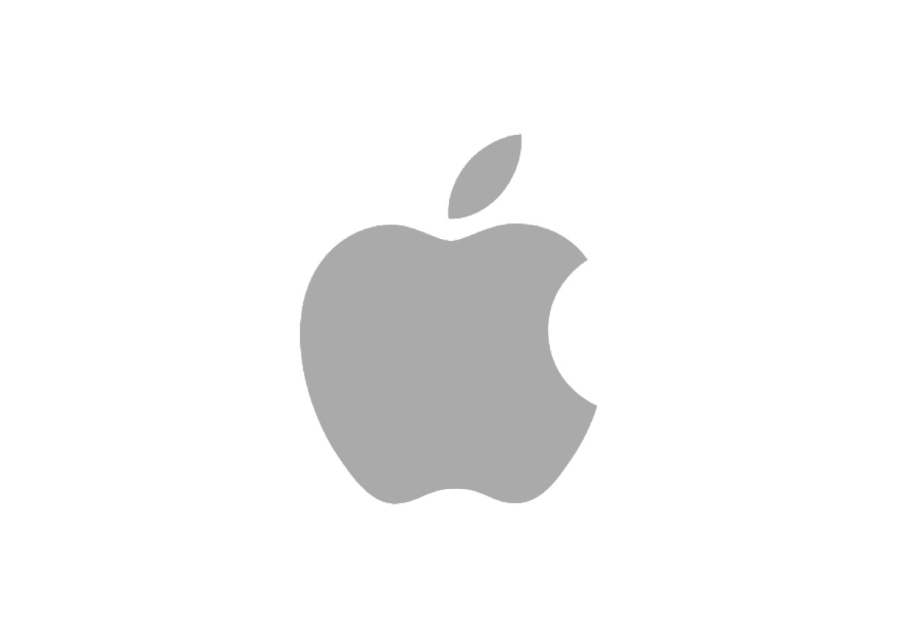
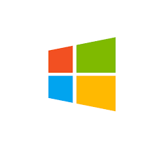
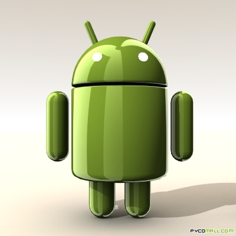

Bootstrap es un framework desarrollado y liberado por Twitter que tiene como objetivo facilitar el diseño web. Permite crear de forma sencilla webs de diseño adaptable, es decir, que se ajusten a cualquier dispositivo y tamaño de pantalla y siempre se vean igual de bien. Es Open Source o código abierto, por lo que lo podemos usar de forma gratuita y sin restricciones.
|  |  |  |